11 regiões da jornada (2 anos) + 5 interiores da vila · cada cenário com 5 pontos exploráveis ✦
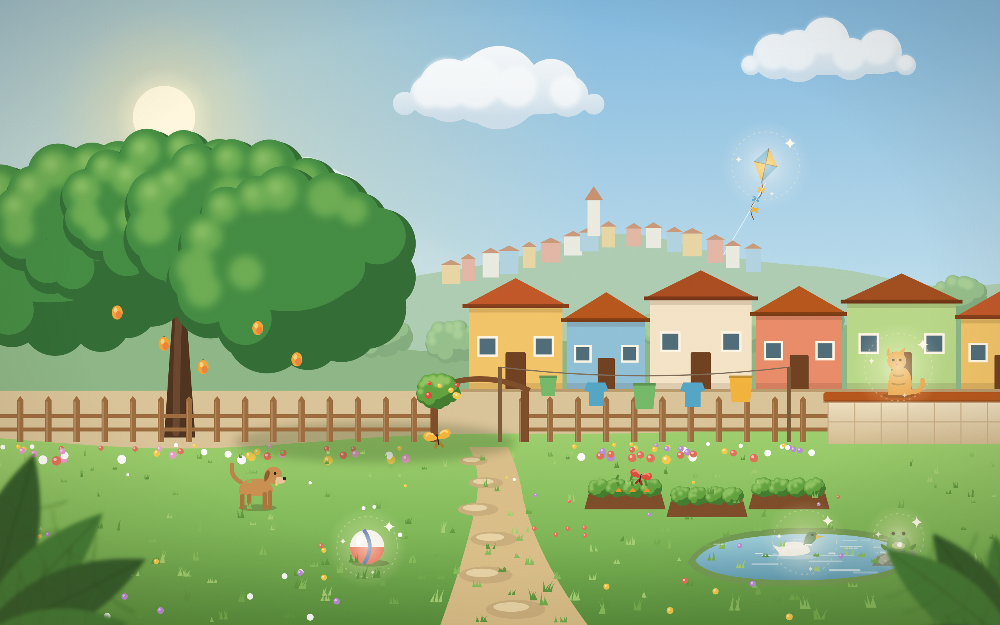
01 Quintal / VilaEtapa 0
›
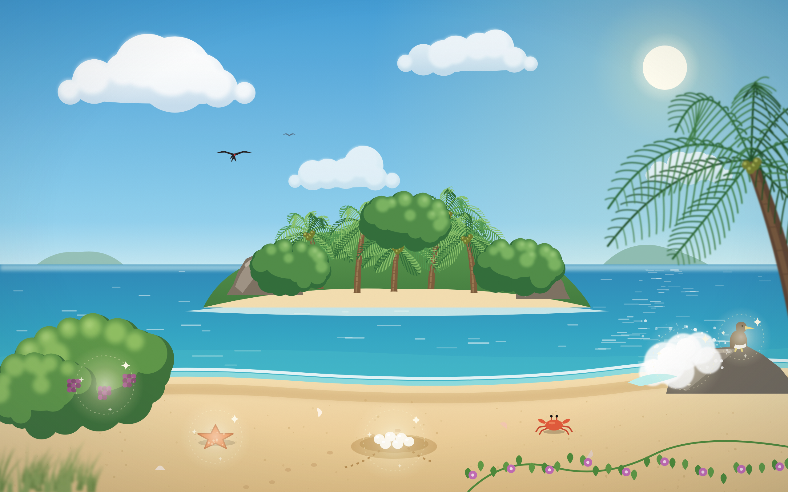
02 Ilha das VogaisEtapa 1
›
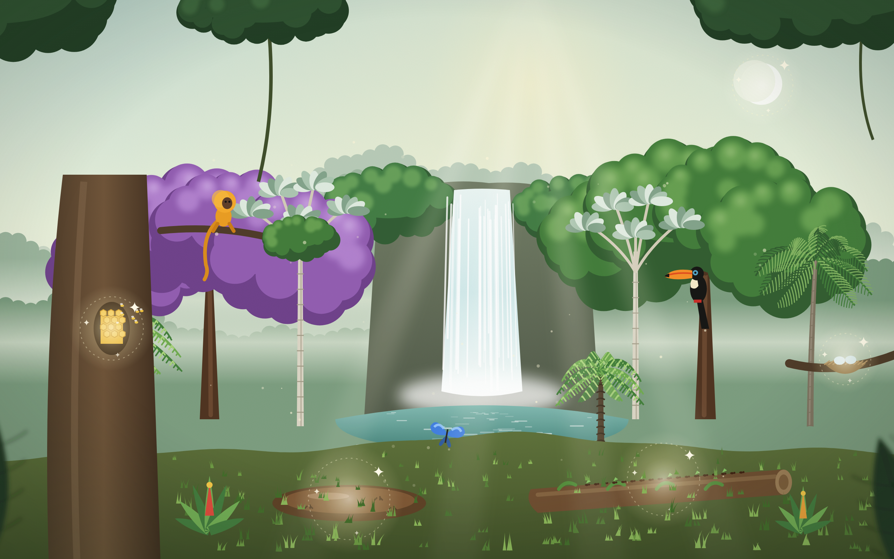
03 Mata AtlânticaEtapa 2
›
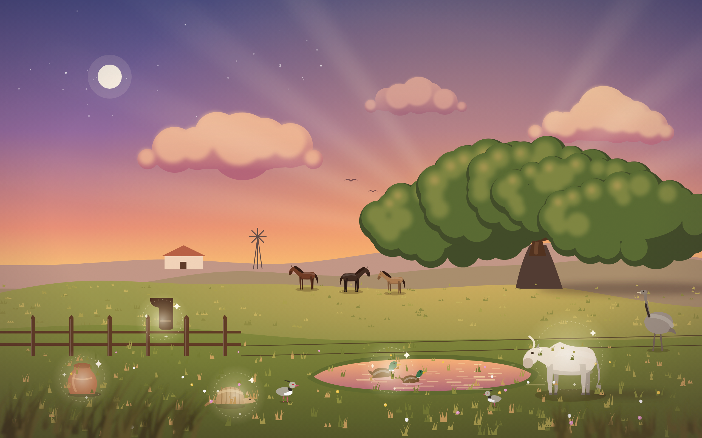
04 PampaEtapa 3
›
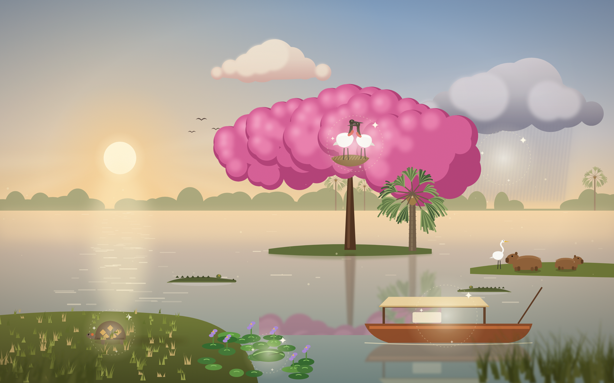
05 PantanalEtapa 4
›
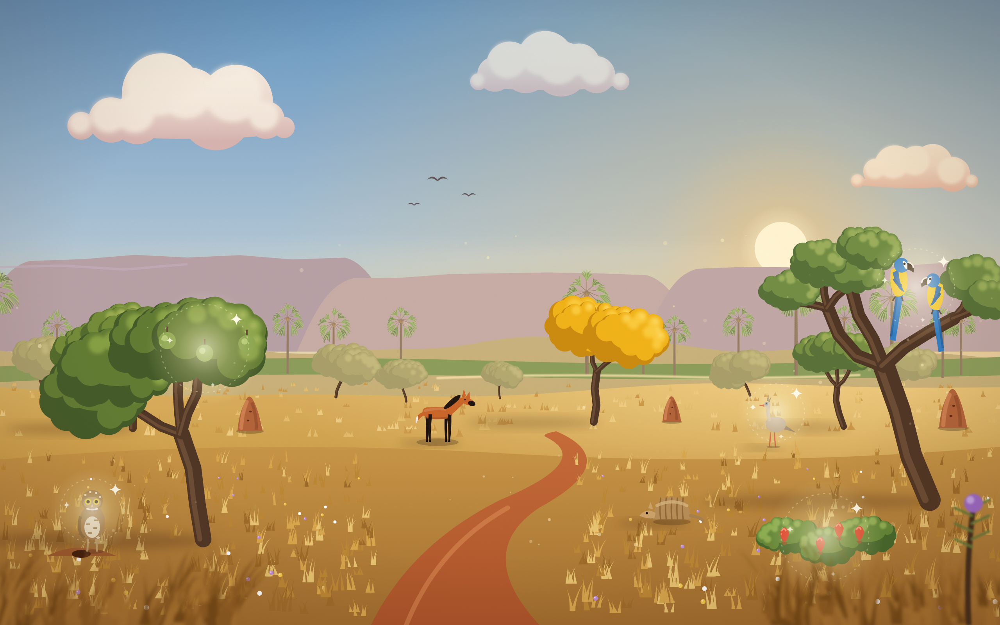
06 CerradoEtapa 5
›
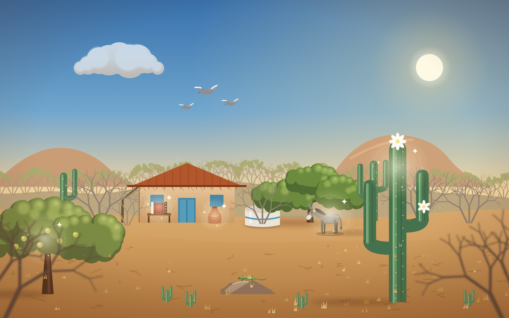
07 CaatingaEtapa 6 · chefe Ano 1
›
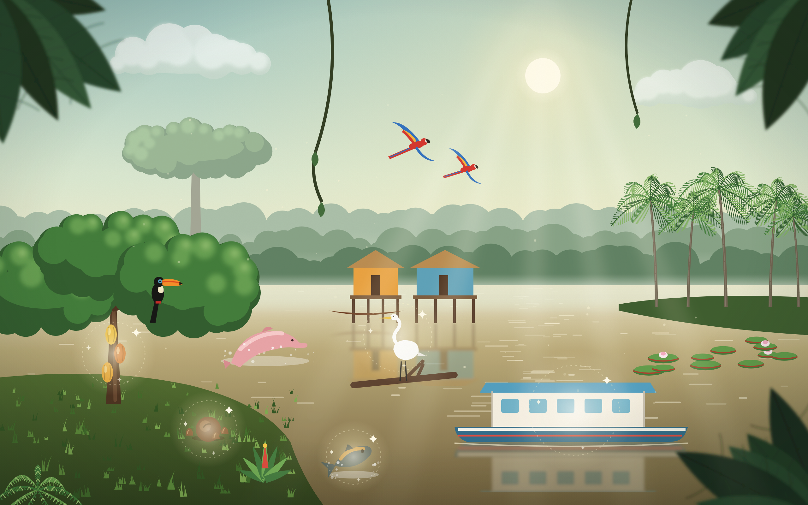
08 AmazôniaEtapa 7
›
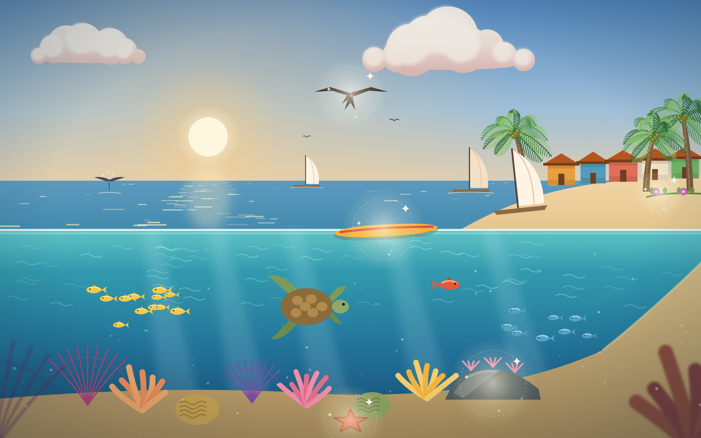
09 Litoral e MarEtapa 8
›
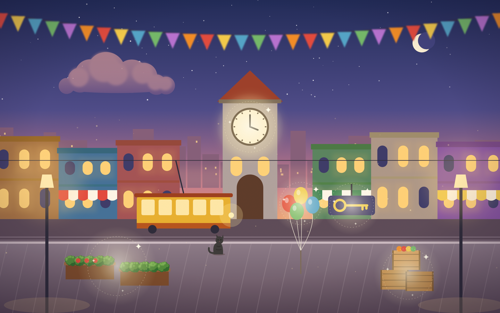
10 Cidade das LetrasEtapa 9
›
11 Arquipélago dos LivrosEtapa 10 · final
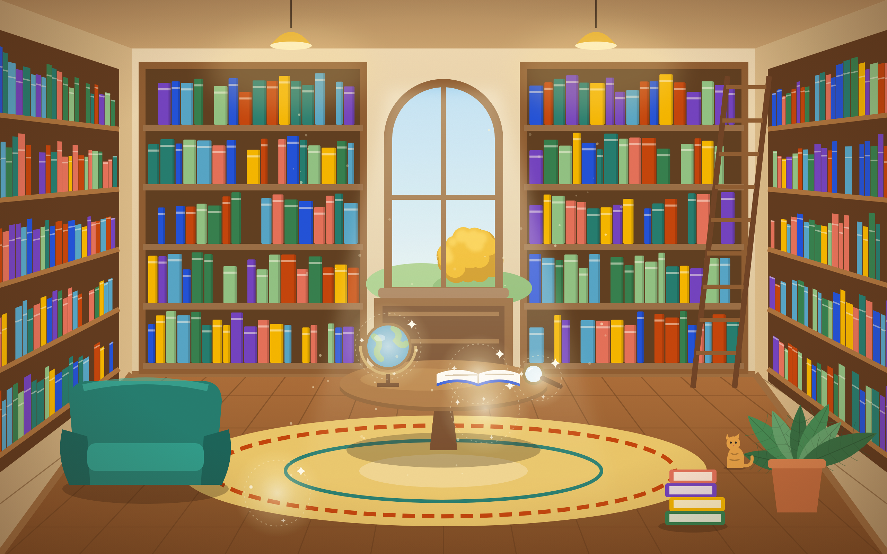
◆ Bibliotecainterior
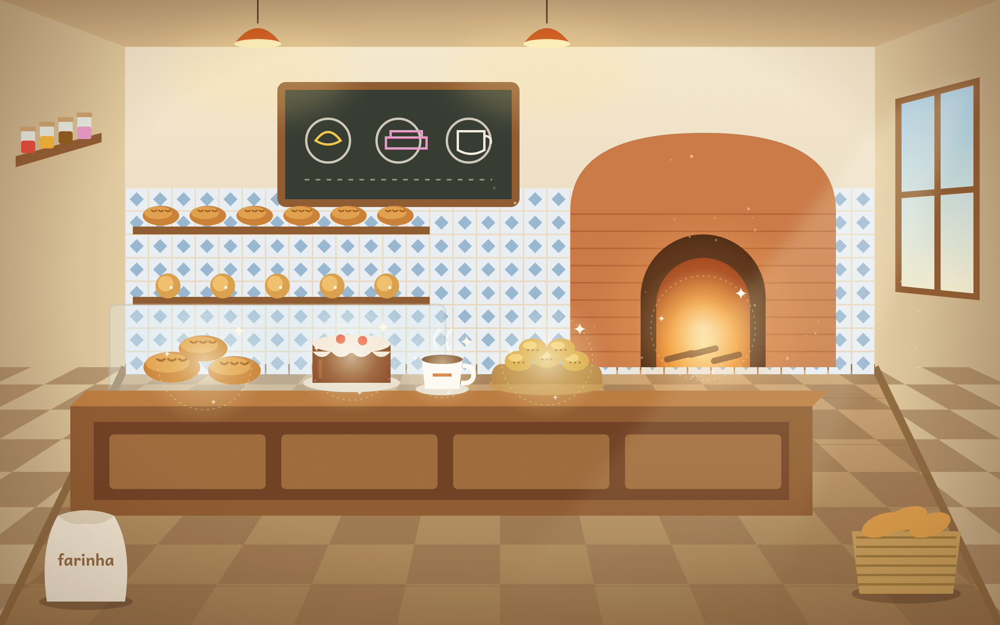
◆ Padariainterior
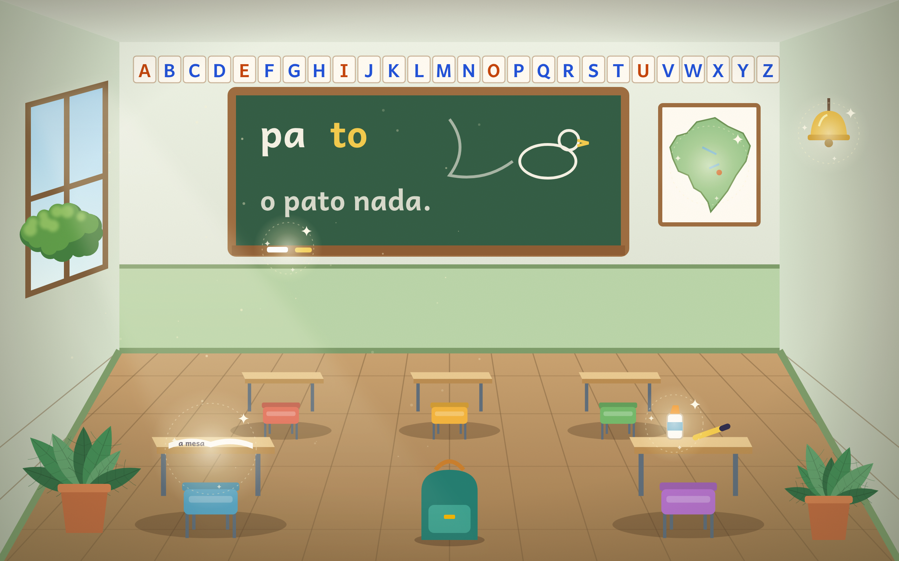
◆ Sala de aulainterior
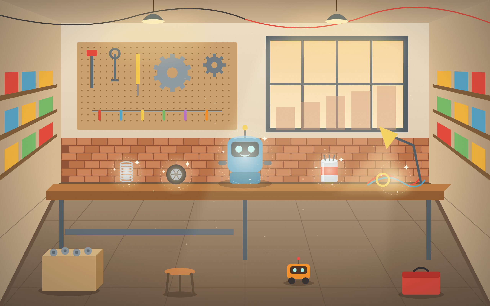
◆ Oficina de robôsinterior
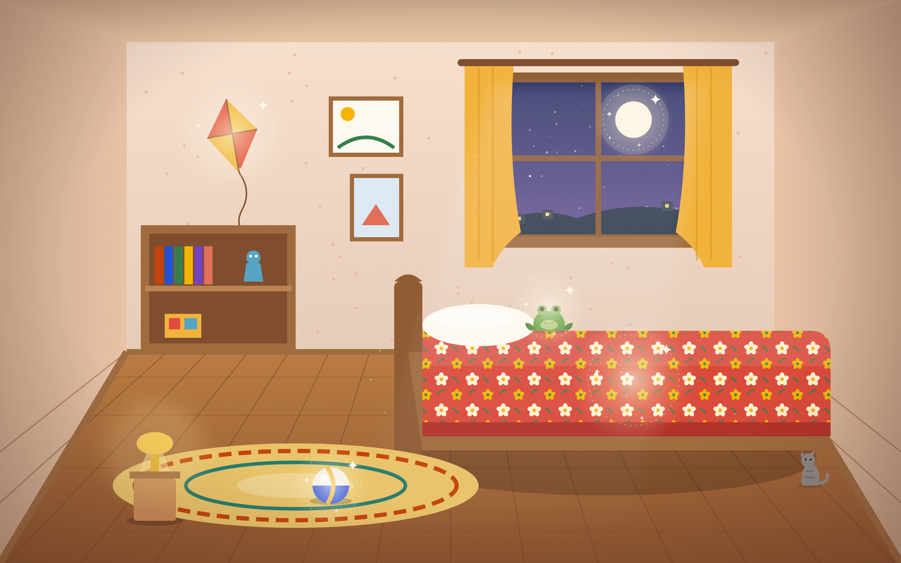
◆ Quarto da Sofiainterior